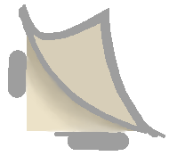

Cumulo-Climb is a game for the 2026–2027 DGA Summer Project. I implemented a dynamic camera and particle systems, designed modular level chunks, and created a continuous background system with seamless transitions. You can play the project on itch.io.
